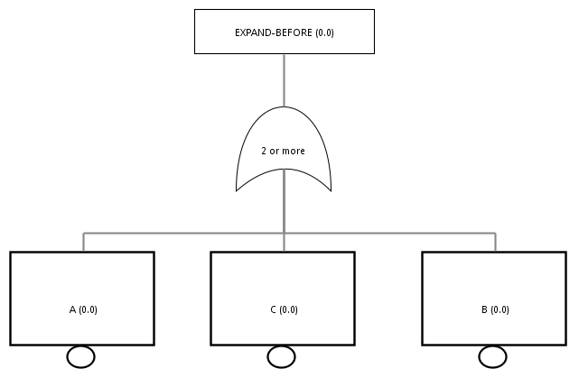
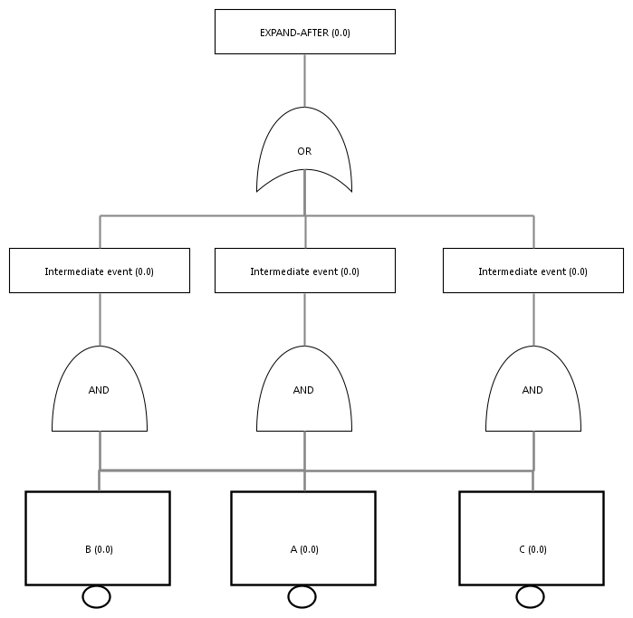
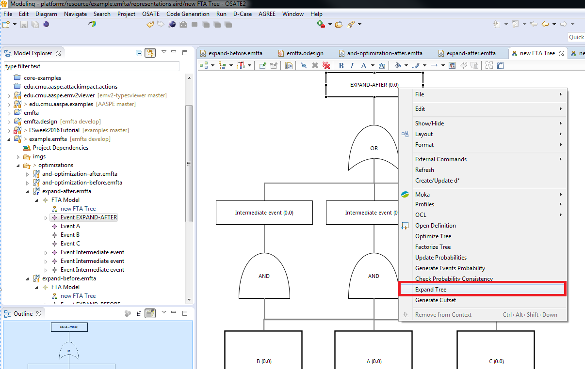

These functions help to to improve the representation of the tree. Often (especially when being generated from another notations), the Fault-Tree can be big and hard to read or understand. Our objective is to provide tools that help the user to remove useless or noisy information so that engineers can focus on the core issues of the model.
We propose three ways to improve the fault-tree:
Optimization removes redundant information in the Fault-Tree, when the same event is present in several gates in the tree hierarchy.Take for example the following tree (see picture below). The elements P1 or referenced by all the OR gates. It can be only in the first gate because no matter what, the event will trigger a failure. It does not need to be in the gates below. Once we remove the references in the gates below, the OR gates at the bottom are empty. We can then remove them and just keep the AND gate.

This results in the following FTA tree. It reduces two gates and improves it readability.

Currently, the tool can perform the optimization function with shared events on multiples OR gates. Gate types ORMORE or ORLESS are currently not supported. One workaround is to expand these gates first and then, perform the factorization.
In order to use the optimization, the user should click on the event to optimize, right click and select optimize tree, as shown below. The optimize operation can be performed on any event in the tree. The operation is performed within the leaves below the selected event.

The model examples used in this document are called multiple-ored-before.emfta (before the transformation) and multiple-ored-after.emfta (after the transformation) and are available on our github repository.
Factorization re-organizes the Fault-Tree, especially when sub-trees share events. The following picture shows an example of a tree with OR gates that share a common event: P1.

This tree can then be updated by putting the common error on top and have the AND gate under. This reduces the number of gates in the tree and facilitates its analysis.

Currently, the tool can perform the same operation for the AND and OR gates. Other types, such as ORMORE or ORLESS are currently not supported. One workaround is to expand these gates first and then, perform the factorization.
In order to use the factorization, the user should click on the event to optimize, right click and select factorization, as shown below. The factorization operation can be performed on any event in the tree. The operation is performed within the leaves below the selected event.

The model examples used in this document are called and-optimization-before.emfta (before the transformation) and and-optimization-after.emfta (after the transformation) and are available on our github repository.
Expansion will remove the orless or ormore operators from the Fault-Tree and transforms them into regular and or or gates. The reason to do this replacement is that FTA optimization and refactoring is relying on pure and or or gates. When a Fault-Tree contains a ormore gate, it should be expanded before the Fault-Tree is optimized or factorized. The following picture shows a Fault-Tree with a ormore gate. In this example, the event EXPAND-BEFORE is triggered if at least two of the following events occurs: A, B or C. In other words, the top-level event is triggered is the following event combination is triggered:
In fact, this can be replaced by a bigger FTA that will create AND gates for each case and put them under a global OR gate. The following FTA is the expansion or the previous example.
This tree can then be updated by putting the common error on top and have the AND gate under. This reduces the number of gates in the tree and facilitates its analysis.
The resulting FTA is more dense and complex than the previous one. However, this should not be the resulting FTA. The expansion is an intermediate step before using optimization and factorization functions.
Currently, the tool can perform the same operation for the AND and OR gates. Other types, such as ORMORE or ORLESS are currently not supported. One workaround is to expand these gates first and then, perform the factorization.
In order to use the expand function, the user should click on the event to expand (the event associate with a ormore gate), right click and select expand menu option, as shown below. The expand operation is performed only on the selected node.
The model examples used in this document are called expand-before.emfta (before the expansion) and expand-after.emfta (after the expansion) and are available on our github repository.